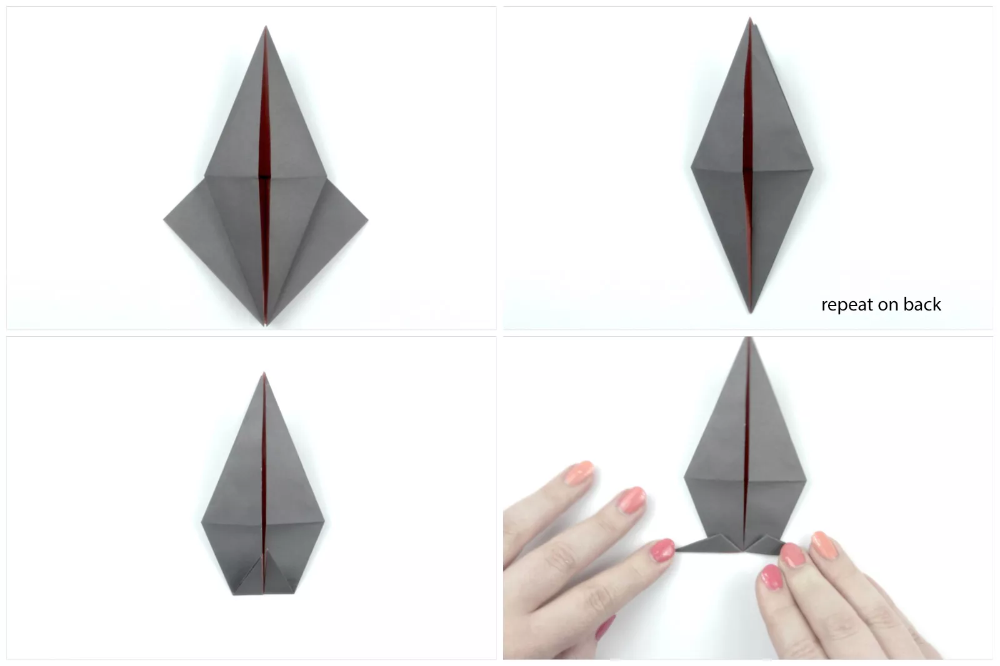

How to Make an Origami Crow for Halloween
Make an origami crow for Halloween! Learn how to make this simple
traditional origami crow to set a scary scene for this holiday.
This origami bird could also be a raven, blackbird, or another
type of bird. What's nice about this origami bird is how it stands
up to make an especially frightening scene in a window for trick-or-treaters.
Or, you could decorate a Halloween greetings card with this little origami bird.
When you're done, you can stand your crow up on a ledge as long as there
is room for his tail! If you're looking for more origami birds to make
you can also make an albatross or peace dove. These work well as decorations,
fun little gifts to friends or family, or as embellishments on greeting cards.
Start with your paper white side up (if you have two-tone paper).
Fold your paper in half, from left to right.
Unfold the paper.
Next, fold it in half top to bottom.
Then unfold.
Flip the paper to the other side.
Fold the paper in half diagonally in both directions.
You will be left with an X crease on your paper.
Flip your paper back to the other side.
Bring the left and right corners into the middle.
The top point will collapse down on top.
You will have what is called an origami "square base" or "preliminary base."
Starting with your origami square base you will continue on to create an "origami bird base."
Fold the lower left and right edges to the central crease as shown.
Next, fold the top down over the top.
Unfold the sides.
Reverse the left and right creases you just made.
Open out the lower section.
Then reverse the folds, bringing the bottom point up to the top.
Repeat the process on the other side and you will have the completed origami bird base.
Fold the two bottom points up the central horizontal crease. These will form the legs.
Fold them both down and out to opposite sides.

Unfold the last step and reverse fold the feet.
Your paper should look like the second photo in the group below.
Flip the top section of the foot down.
Repeat the last few steps on the other foot.
Fold the top down.
Flip the model over to the other side, from left to right.
Fold the model in half. Your photo should look like the first
photo in the bottom row of photos above.
Fold the head down to a good angle.
Open out the top and reverse the fold there.

Our Purpose Is To Sustainably Make the Pleasure and Benefits of sports Accessible to the Many.
Copyright-2021 Abdul Haq